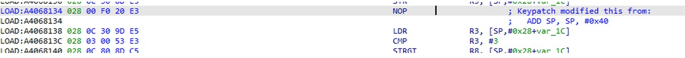

非平坦化混淆总结
整理那些见过的非平坦化、非 bcf 混淆，以后见到新的再添加进来。
函数名称混淆
利用 deinfe 宏对函数名做重命名，编译时编译器会用后面那串玩意替代函数名
效果如下，其实意义不大，还是能够通过分析函数逻辑知晓其功能
修改返回地址
计算出一个值放到 R0 寄存器，倒数第二句指令用 R0 覆盖掉栈上的 LR ，最后一句指令 pop pc 跳转过去，这就是美团 libmtguard 中的混淆
修改执行流还得搭配垃圾数据或指令才能扰乱 ida 的分析，像下图这种，在混淆数据前调用函数，函数中修改返回值跳过混淆数据。
直接修改PC
同样是修改执行流，往 PC 寄存器 mov 一个地址
插入破坏栈平衡的指令
下图中的指令 ADD SP,SP, #0x40 修改了栈指针 SP ，导致栈不平衡
F5 后能看到 ida 提示了 “positive sp value has been detected, the output may be wrong!”
解决办法参考：https://bbs.pediy.com/thread-140002.htm和https://bbs.pediy.com/thread-158896.htm
首先勾选 Stack pointer
然后是检查整个函数有哪些指令操作了 SP ，这些指令后的指令栈指针值是负数的，找出来然后 nop 掉

栈展开函数stack_check_fail识别失败
这种会导致 make function 失败，如下图，loc_2404 就是 stack_check_fail 函数，它的上面的 pop 指令就是函数末尾处，再往上 0x23FE 处会跳过函数末尾到达 loc_2404 ，这其实是检查有没有栈溢出，所以跳转 stack_check_fail 函数，这个函数应该会使程序退出
进入 sub_47FC 看看，编辑该函数可以看到 ida 识别它是返回的，那就不对了，把 Does not return 勾选了，然后在函数开头按 p 键创建函数
无条件跳转JUMPOUT
利用 ida 无法计算动态值，构造地址无条件跳转，使得 ida 识别的函数提前结束，如下图所示，实际上 BX R5 只是跳到下面不远处，而中间塞了一些垃圾数据。
对这种只能根据指令特征写脚本 patch